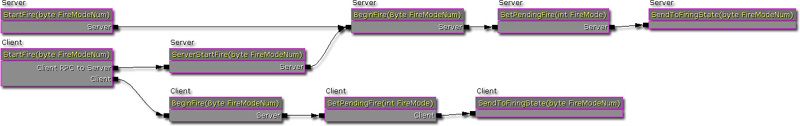

UDN
Search public documentation:
ReplicationWeaponsCH
English Translation
日本語訳
한국어
Interested in the Unreal Engine?
Visit the Unreal Technology site.
Looking for jobs and company info?
Check out the Epic games site.
Questions about support via UDN?
Contact the UDN Staff
日本語訳
한국어
Interested in the Unreal Engine?
Visit the Unreal Technology site.
Looking for jobs and company info?
Check out the Epic games site.
Questions about support via UDN?
Contact the UDN Staff
武器中的复制
武器开火概述
虚幻引擎3中武器开火逻辑如下所示:
客户端
- 本地客户端控制器调用武器中的StartFire()。
- 让武器的服务器版本调用ServerStartFire()并在客户端版本上调用BeginFire()。
- 在客户端版本的InventoryManager中的待处理开火数组中设置字节。
- 如果客户端版本的武器是‘激活’状态，那么将把武器的客户端版本设置为适当的开火状态。
服务器
- 服务器收到客户端的要求调用ServerStartFire()或者权威Actor调用StartFire（）。然后将在服务器版本的武器上调用BeginFire()。
- 在服务器版本的InventoryManager中的待处理开火数组中设置字节。
- 如果服务器版本的武器是‘激活’状态，那么将把武器的服务器版本设置为适当的开火状态。

武器停火概述
虚幻引擎3中武器停火逻辑如下所示:
客户端
- 本地客户端控制器调用武器中的StopFire()。
- 让武器的服务器版本调用ServerStopFire()并在客户端版本上调用EndFire()。
- 清除客户端版本的InventoryManager中的待处理开火数组中字节。
- 停止在客户端上进行武器开火。
服务器
- 服务器收到客户端的要求调用ServerStopFire()或者权威Actor调用StopFire()。然后将在服务器版本的武器上调用EndFire()。
- 清除客户端版本的InventoryManager中的待处理开火数组中字节。
- 停止在服务器上的武器开火。
武器属性
- bOnlyRelevantToOwner - 设为true，因为武器复制仅和拥有武器的actor有关。其他玩家不需要知道另外一些玩家的武器状态。
- bReplicateInstigator - 设置为true，因为发起者(Instigator) 变量必须保持一致，以便仿真更加精确。
- bOnlyDirtyReplication - 设置为false ,因为武器需要更新任何信息，不管信息是否改变。
- RemoteRole - 设置为 ROLE_SimulatedProxy，因为客户端需要能够模拟这个actor。
结论
在多玩家游戏中，玩家的武器有两种不同的版本存在。一个版本存在于服务器上，另一个版本存在于客户端上。复制包含这两个版本，以便客户端可以正确地模拟服务器端发生的事情。尽管对于武器来说这个复制形式可以正确工作但该形式并不适用于任何情况，意识到这一点是非常重要的。但是，有很多其他的情况，这个复制形式也是适用的，比如需要魔法的技能。